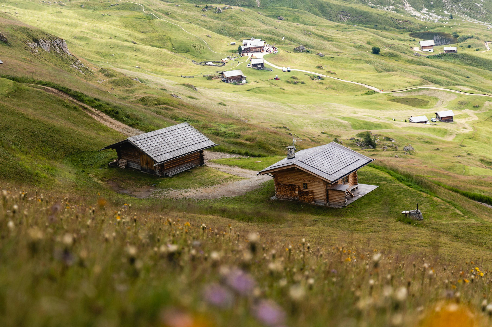

<Student>
I'm a student currently in my first year of collage, I'm studying at FINKI in the computer science study

</Coder>
I'm a coder currently knowing the languages, C++, JavaScript, Python, HTML and CSS
Common Questions and Answers
where are you studying?
I am currently a first year student at FINKI, and I am studying computer science, I enjoy the way classes are being help, and I love all the memories I have so fara and hope to make some more.
would you recommend your collage/degree to anyone curious about starting their tech journey?
Yes, I would recommend my collage to anyone interested in widening their tech knowledge and expertise, tho I wouldn't recommend CS to everyone because it is pretty brod and covers a lot of topics some of which might not interest you, but you should look into it in case it is something you find interesting
What are your plans for the future ?
My current plan is to study as much as i can, to hopefully eventually be able to work my dream job, and to be able to be in a place where I can be working with the newest and most interesting tech, including robotics and artificial intelligence
Do you have any projects you are currently working on?
I am always working on something, but currently I am working on different projects I intend to post on my GitHub, but I am having a hard time deciding when they are finished and good enough to post, although hopefully I will be posting them this summer and be able to finally be proud to show them off.
Code Example 1
#include <iostream>
#include <cstring>
#include <cmath>
using namespace std;
class profile {
private:
char ime[15];
int br_prijateli;
int god;
const static int max;
public:
profile(char *ime = "", int br_prijateli = 0, int god = 1950) {
strcpy(this->ime, ime);
this->br_prijateli = br_prijateli;
this->god = god;
}
profile(const profile &from) {
strcpy(this->ime, from.ime);
this->br_prijateli = from.br_prijateli;
this->god = from.god;
}
~profile() {}
int get_b() {
return br_prijateli;
}
friend bool operator==(int x, profile &s);
bool operator==(profile &x) {
return br_prijateli == x.br_prijateli ? 1 : 0;
}
bool operator==(int x) {
return br_prijateli == x ? 1 : 0;
}
bool operator>(profile &x) {
return god > x.god ? 1 : 0;
}
void operator+=(int s) {
br_prijateli = br_prijateli + s;
}
profile operator++(int) {//postfix
profile temp = *this;
br_prijateli += 1;
return temp;
}
profile &operator++() {//prefix
br_prijateli += 1;
return *this;
}
friend ostream &operator<<(ostream &o, profile p){
o<<p.ime<<" "<<p.br_prijateli<<" "<<p.god<<endl;
return o;
};
friend istream &operator>>(istream &i, profile &p){
cout<<"vnesi podatoci"<<endl;
i>>p.ime>>p.br_prijateli>>p.god;
return i;
}
};
class SocialMedia{
private:
char ime[15];
profile *profiles;
int n;
public:
SocialMedia(char *ime=""){
strcpy(this -> ime, ime);
n=0;
profiles = new profile[n];
}
SocialMedia(const SocialMedia &socialMedia){
strcpy(this -> ime, socialMedia.ime);
n=socialMedia.n;
profiles = new profile[n];
}
~SocialMedia(){
delete [] profiles;
}
void operator+=(profile &s){
profile *pomoshna = new profile[n+1];
for (int i = 0; i <n; ++i) {
pomoshna[i] = profiles[i];
}
pomoshna[n] = s;
delete [] profiles;
profiles = pomoshna;
n++;
}
};
bool operator==(int x, profile &s){
return x == s.br_prijateli ? 1 : 0;
}
const int profile::max=5000;
int main(){
profile p("ime",25,1980);
profile p1("ime1", 15, 1980);
profile p2;
cin>>p2;
if(p == p1){
cout<<"isti"<<endl;
}else{
cout<<"razlicni"<<endl;
}
p1=p++;
cout<<p1.get_b()<<endl;
p1=++p;
cout<<p1.get_b()<<endl;
p+=20;
cout<<p;
cout<<p2;
p==25;
25==p;
}Code Example 2
#include <cmath>
#include <string>
using namespace std;
class DebitAccount{
protected:
string ime;
string prezime;
long int broj;
double saldo;
public:
DebitAccount(string ime="", string prezime="", long int broj=0, double saldo=0){
this->ime = ime;
this->prezime = prezime;
this->broj = broj;
this->saldo = saldo;
}
void print(){
cout<<<ime<<" "<<prezime<<" "<<broj<<" "<<saldo;
}
void Uplata(double sredstva){
if(sredstva > 0){
saldo += sredstva;
}
}
void isplata(double sredstva){
if(sredstva <= saldo){
saldo -=sredstva;
}
}
};
class CreditAccount : public DebitAccount{
private:
double kamata;
double limit;
double kredit;
public:
CreditAccount(string ime="", string prezime="", long int broj=0, double saldo=0,double kamata=0, double limit=0, double kredit=0)
: DebitAccount(ime, prezime, broj, saldo){
this->kamata = kamata;
this->kredit = kredit;
this->limit = limit;
}
void print(){
DebitAccount::print();
cout<<" "<<kamata<<" "<<limit<<" "<<kredit<<endl;
}
void uplata(double sredstva){
if(kredit > 0){
if(sredstva > kredit){
DebitAccount::Uplata(sredstva - kredit);
kredit = 0;
}else{
kredit-=sredstva;
}
}else{
DebitAccount::Uplata(sredstva);
}
}
void isplata(double sredstva){
if(sredstva <= saldo){
DebitAccount::isplata(sredstva);
}else{
double precek = sredstva - saldo;
precek *= (1 + (kamata/100.0));
if(kamata + precek <= limit){
saldo = 0;
kredit += precek;
}else{
cout<<"nemoze da se isplatat sredstvata"<<<ndl;
}
}
}
};
int main(){
CreditAccount k("ime", "prezime", 123456, 5000, 25,1500,0);
k.print();
k.uplata(100);
k.print();
k.isplata(1000);
k.print();
k.isplata(10000);
k.print();
k.isplata(4500);
k.print();
}Would you recommend studying computer science to anyone interested in the field, if so any recommendations for classes?
Yes, computer science as a field is a relly interesting field, it covers various areas of study including but not limited to, Artificial Intelligence, Robotics, Web Development, System Automation, Game Design/Development, Data Science and more. Although I will recommend it, I cannot suggest anything particular since it is such a brod subject, tho subjects like Discreet Mathematics, Object-Oriented Programing and then studying multiple different languages, I hope this helped you in you decision of a possible study.